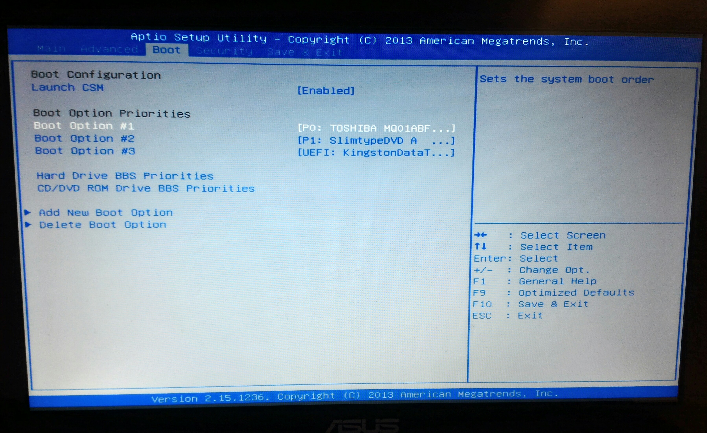
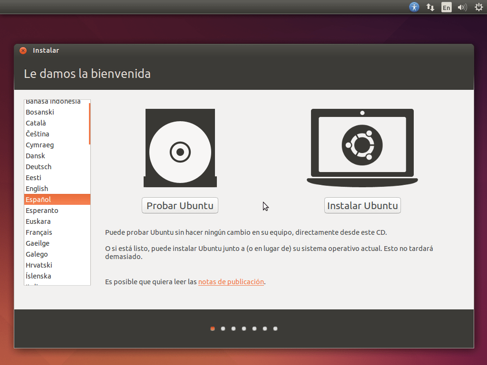

para realizar la instalación de nuestro sistema operativo lo primero a realizar es la descarga de la imagen ISO del sistema que queramos instalar, de los cuales los links se encuentran en la pestaña de distribuciones. Una vez ya descargada la imagen ISO lo que haremos a continuación es crear una usb booteable, lo cual lo haremos con una herramienta llamada Rufus, existen otras, pero en especial esta herramienta es muy intuitiva y las configuraciones predeterminadas nos sirven por lo que no hay necesidad de interactuar mucho con las configuraciones si las desconocemos
como podemos ver en la imagen del programa rufus, contiene lo siguiente:
En este apartado es importante escoger bien nuestra unidad usb y el tipo de partición de nuestro disco duro o ssd, Actualmente la mayoria viene ya con una partición gpt.
Una vez ya creando nuestra USB booteable lo proximo hacer es apagar nuestra pc, encenderla y en la mayoria de las computadoras para entrar a la bios es con F2, una vez entrando a la bios y anteriormente colocado nuestra USB seleccionar como dispositivo de arranque la USB. 
Reiniciamos nuestra computadora y al iniciarse se hara con nuestro sistema operativo de la memoria. En este caso lo mostraremos con ubuntu, el cual tiene una interfaz gráfica de instalación por lo que es mas intuitivo hacerlo.
Si queremos hacer una instalación del sistema escogemos instalar ubuntu en caso de que no, linux nos provee Una opción bastante interesante la cual es probar el sistema antes de instalarlo, despues de escoger alguno de los dos habra dos casos:
En caso de querer una instalación limpia en donde no tengamos nada de archivos escogemos, la primera opción, nos dice "borrar disco e instalar Ubuntu", de esta forma, formateara el disco e instalara el sistema, en caso de querer una instalación de Linux junto a windows escogemos opciones avanzadas donde haremos nuestra partición una vez hecho este paso solo nos dira que nombre y contraseña tendra nuestra maquina y empezara una barra de carga la cual nos dice el estado de la instalación.